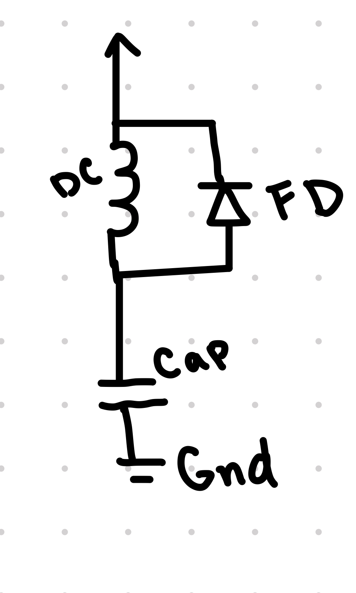
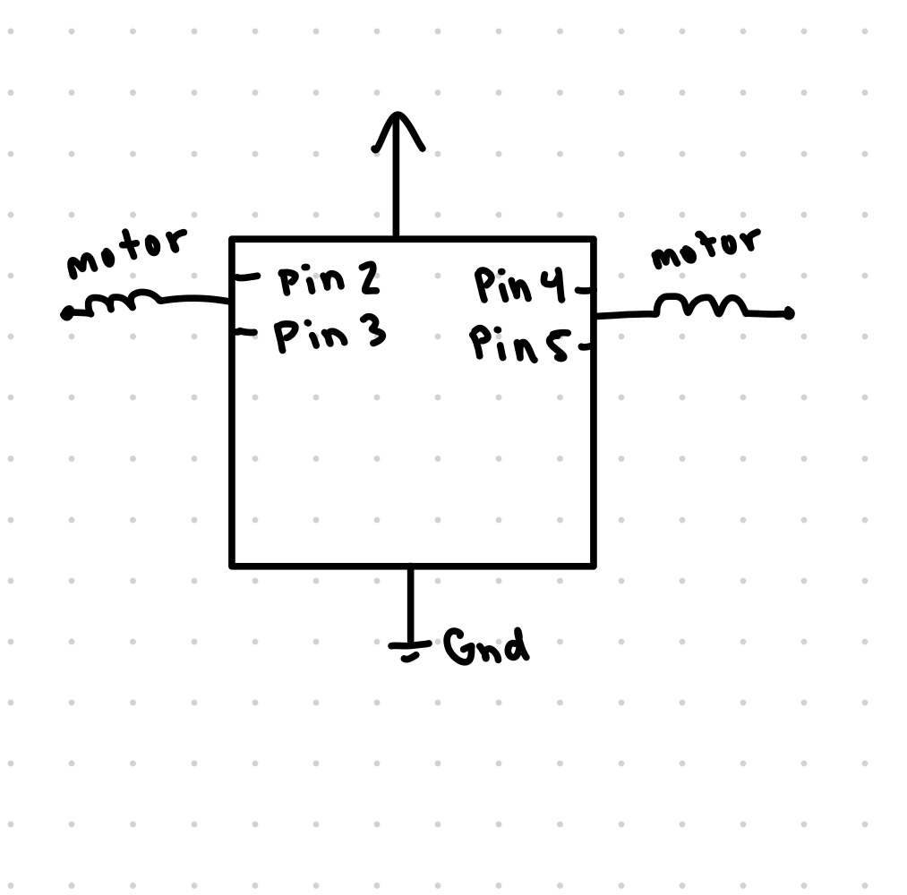

Below is all the documentation for assignment 5! To my left is my circut board
Below is all the documentation for assignment 5! To my left is my circut board
In my schematic, the capactive touch is being used with a key as the sensor. Then i have the external power supply giving power to a LED strip which is connected by the transistor. For the current in my ciruct, there is 12V powering my circut and the 3 LEDS each have a 3.3V and the resistor in the LED strip is ~240 ohms. Using the V=IR equation, we'd have 12-9.9=I*240 which condenses down to 2.1/240=I which is 0.00875A or 8.75mA. The current being used is 8.75mA.
#include // The capacitive touch library
CapacitiveSensor cs_4_2 = CapacitiveSensor(4,2); // 1 megohm resistor between pins 4 & 2, pin 2 is sensor pin, add wire, metal thing
void setup() {
// put your setup code here, to run once:
pinMode(9, OUTPUT); // initialize pin 9 (LED through transistor) as an output device
cs_4_2.set_CS_AutocaL_Millis(0xFFFFFFFF); // turn off autocalibrate on channel 1 - just as an example
Serial.begin(9600);
}
void loop() {
long start = millis();
long total1 = cs_4_2.capacitiveSensor(30); // value for sensor output
if (total1 > 1000) { // if the capacitive sensor is being touched turn the LED On
analogWrite(9, 255); // Transistor on, turning LEDS on
} else { // if not being touched, turn LEDS off
analogWrite(9, 0); //transistor off so LEDS are fully off, voltage 0
}
Serial.print(millis() - start); // check on performance in milliseconds
Serial.print("\t"); // tab character for debug window spacing
Serial.println(total1); // print sensor output 1
}
In my code, if the capacitive touch value is greater than 1000 (meaning i'm touching the key), then the LEDs will turn on, but if I'm not touching it (value less than 1000), turn off the key.

In the circut, if I'm touching the key (sensor), then the LEDS will turn on, meaning the transistor is on, giving the LEDS the 8.75mA current and 12V as their voltage. When I'm not touching the key, the LEDs are off meaning there is 0V of voltage and 0 current being given to them.
Q1: What is the absolute maximum amount of current between pins 2 and 3?
The absolute maximum amount of current between pins 2 and 3 would be 37.2A
Q2: Draw a schematic for a circuit with using at least your arduino, a DC motor, a flyback diode, and capacitors between power and ground. Find parts with datasheets you could use for each of these schematic components.
Q3:Draw a schematic using at least your arduino, this chip, and two motors. Write (pseudo) code that shows how you would move the motors both forward, both back, then one forward one back, and one back then forward.
In this schematic, there are two motors hooked up to the pins of the chip. Below I'll Write pseudo code for how to move these motors.
void setup() {
pinMode(2, OUTPUT) // 1, forward
pinMode(3, OUTPUT) // 1, backward
pinMode(4, OUTPUT) //2, forward
pinMode(5, OUTPUT) //2, backward
}
void loop() {
// forward
digitalWrite(2, High)
digitalWrite(4, High)
//backward
digitalWrite(3, High)
digitalWrite(5, High)
// 1 forward ,1 back
digitalWrite(2, High)
digitalWrite(5, High)
// 1 back, 1 forward
digitalWrite(3, High)
digitalWrite(4, High)
}